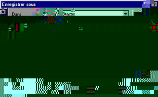
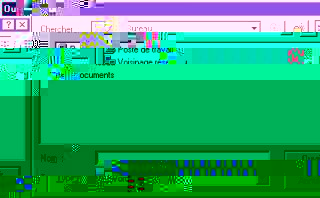
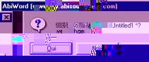
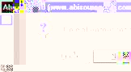

Über AbiWord
Über Open Source
Index
Inhalt
Neuigkeiten
Version prüfen
Einführung
Installation
Erste Schritte
Der Arbeitsplatz
Text eingeben
Formatieren
Befehle editieren
Paragraphen
Stile
Objecte einfügen
Drucken
Einstellungen
Abkürzungen
abisource.com
FAQ
Credits
Suchen |
|
Erste Schritte
* Starten von AbiWord
* Ein neues Dokument erstellen
* Ein Dokument abspeichern
* Ein Dokument öffnen
* AbiWord beenden
Windows: Abiword kann auf zwei Arten gestartet werden:
- Doppelklick auf das Icon, das sich auf dem Desktop befindet.

- Klick auf den Start-Knopf auf dem Windows-Taskbar, unter 'Programme' die Gruppe 'AbiWord' auswählen und dort auf das 'AbiWord' Icon clicken.
Linux: Abiword kann auf zwei Arten gestartet werden:
- Klick auf das AbiWord Icon in Ihrem Menu oder auf Ihrem Desktop.
- Tippen von "abiword" in einem X-terminal.
Für jedes neue Dokument öffnet ein neues AbiWord Fenster mit einer leeren Seite.
AbiWord ist ein "single document interface" (SDI) im Gegensatz zu dem
"multiple document interfaces" (MDI), wie Microsoft Word, welches
alle Dokumente im selben Word Fenster öffnet. Weitere Informationen über diese beiden Konzepte sind in SDI Vs. MDI.
Es gibt viele Möglichkeiten, ein neues Dokument zu öffnen:
- Im 'File' Menu auf "New" klicken
- Im Window Menu auf "New window" klicken
- Auf "Create a new document"
 klicken klicken
- Das Tastaturkürzel "Ctrl" and "N" verwenden
Save As...
Wurde Ihr Dokument noch nie abgespeichert, wählen Sie einen Namen und ein Verzeichnis, in dem die Datei abgespeichert werden soll. Dann wählen Sie eine der folgenden Aktionen:
- Im 'File' Menu "Save as" anklicken
- das "Save as..." Icon
 anklicken anklicken
In beiden Fällen scheint ein Fenster. Wählen Sie das Verzeichnis (Festplatte oder Diskette) und tippen Sie den Namen des Dokumentes in das "Name" Feld. Anschließend klicken Sie "Save" oder den "OK" Knopf. Der Dateiname und das Pfad zum Dokument erscheinen in der Titelzeile von AbiWord anstelle von "Untitled1".

Save
Es gibt 3 Möglichkeiten, eine Datei zu speichern, falls Sie die Arbeiten beendet haben oder die Änderungen in einem Dokument vornehmen wollen:
- Im 'File' Menu "Save" anklicken
- Das "Save the document" Icon anklicken

- Das Tastaturkürzel "Ctrl" and "S" verwenden.
Anmerkung
- Abspeichern überschreibt unwiederruflich das vorherige Dokument. Das alte Dokument ist verloren.
- Wollen Sie ein Dokument verändertn aber die alte Version behalten, so müssen Sie "Save
as..." verwenden und einen anderen Dateinamen eingeben.
- Sollte Abiword in der Linux Version abstürzen, so wird automatisch eine Sicherheitskopie der Datei angefertigt.
AbiWord verwendet diese Sicherheitskopie beim nächsten Starten automatisch.
Formate
AbiWord unterstützt verschiedene Dateiformate beim Speichern:
- *.abw : Dies ist das AbiWord Standardformat. Es ist ein XML Format
- *.zabw : komprimiertes abw Format, um die Dateigröße zu minimieren
- *.rtf : Dies ist ein Standard, welcher "überall funktioniert anywhere"
- *.rft für ältere Applikationen
- *.txt : reines Textformat ohne Formatierungen. (Die Dateigröße ist reduziert)
- *.utf8 : Die ist ein reines Textformat, weilches viele Zeichensätze unterstützt.
- *.html : Der Universelle Standard für Web-Seten
- *.latex : LaTeX Datei Format
- *.wml : ein Dateistandard für Mobiltelephone und tragbare Geräte
- *.dbk : Das 'docbook' Format
- *.pdb : Palm Dokument Standard für Palm Computers
Es gibt drei Möglichkeiten, ein Dokument zu öffnen:
- Im 'File' Menu "Open" anklicken
- Das "Open an existing document" Icon
 anklicken anklicken
- Das Tastaturkürzel "Ctrl" and "O" verwenden
In jedem Fall erschein ein Fenster. Wählen Sie das zu öffnende Dokument aus und klicken Sie entweder doppelt auf den Dateinamen oder klicken Sie auf den "Open" oder "OK" Knopf. Das Dokument wird geöffnet.

Anmerkung
- Die letzten vier geöffneten Dokumente sind unter dem 'File' Menu zum einfachen Auswählen aufgelistet. Diese Dokumente sind in einer
chronologischen Reihenfolge: Die neueste Datei ist oben.
- AbiWord unterstützt folgende Dateiformate beim Öffnen:
- *.abw : Dies ist das AbiWord Standardformat. Es ist ein XML Format
- *.zabw : komprimiertes abw Format, um die Dateigröße zu minimieren
- *.rtf : Dies ist ein Standard, welcher "überall funktioniert anywhere"
- *.rft für ältere Applikationen
- *.txt : reines Textformat ohne Formatierungen. (Die Dateigröße ist reduziert)
- *.utf8 : Die ist ein reines Textformat, weilches viele Zeichensätze unterstützt.
- *.html : Der Universelle Standard für Web-Seten
- *.wml : ein Dateistandard für Mobiltelephone und tragbare Geräte
- *.dbk : Das 'docbook' Format
- *.doc : Dateien von Microsoft Word (alle Versionen) geschrieben
Es gibt drei Möglichkeiten, Abiword zu beenden:
- Im 'File' Menu "Exit" anklicken
- Auf den
 Knof in der Titelleiste klicken Knof in der Titelleiste klicken
- Das Tastaturkürzel "Alt" and "F4" verwenden.
Anmerkungen
- Wollen Sie AbiWord beenden während ein nicht abgespeichertes Dokument geöffnet ist, erschein ein Fenster:

Klicken Sie auf 'Yes' um das Dokument abzuspeichern. Der 'No' Knopf verläßt AbiWord ohne das Dokument abzuspeichern, mit dem
Knopf 'Cancel' verbleiben Sie in AbiWord.
- Sind mehrere Dokumente zur gleichen Zeit geöffnet, Klicken Sie im 'File' Menu auf "Exit" während Sie die "SHIFT"-Taste gedrückt halten um alle Fenster gleichzeitig zu schließen. Ein Fenster erscheint, welches Sie fragt, ob sie alle Fenster schließen wollen.

- Um AbiWord zu iconifizieren, Klicken Sie auf den Knopf
 in der Titelzeile. in der Titelzeile.
- Um AbiWord wiederherzustellen, klicken Sie auf den Knopf
 in der Titelzeile. Unter Windows doppelklicken Sie auf die Titelzeile für denselben Effekt. in der Titelzeile. Unter Windows doppelklicken Sie auf die Titelzeile für denselben Effekt.
- Unter UNIX, rollen Sie das AbiWord Fenster, um es zu seiner Titelzeile zu reduzieren. In KDE, doppelklicken Sie auf die Titelzeile um das Fenster wiederherzustellen.
|